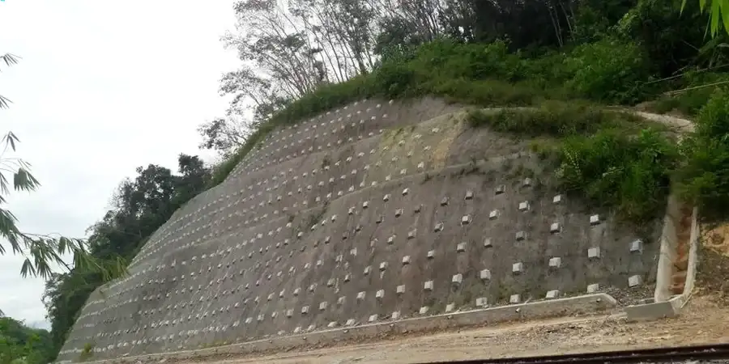

In Bottrop treffen wir oft auf heterogene Böden aus Auffüllungen des Bergbaus und natürlichen Terrassensedimenten des Rheins. Für eine verlässliche Böschungsstabilisierungsbemessung müssen wir genau wissen, wie sich diese Schichten unter Belastung verhalten. Oft reicht die reine Berechnung nicht aus – ergänzend setzen wir corte directo ein, um die Scherfestigkeit an diskreten Grenzflächen zu bestimmen, und prüfen mit masw-vs30 die dynamischen Eigenschaften des Untergrunds. Das Ziel ist ein standsicherer Damm oder Einschnitt, der auch nach Starkregen oder Erschütterungen intakt bleibt.

Die Kombination aus Bergbaufolgelandschaft und Flussterrassen erfordert eine angepasste Böschungsstabilisierungsbemessung mit lokalen Kennwerten.
Methodik und Umfang
Lokale Besonderheiten
Ein typisches Szenario: Ein Bauherr plant eine Baugrube von 6 m Tiefe nahe der Prosperstraße, wo alte Stollen verlaufen. Ohne angepasste Böschungsstabilisierungsbemessung kann Wasser in Klüfte eindringen und den Hang von innen aufweichen. In Bottrop kommt erschwerend hinzu, dass Bergsenkungen die Spannungsverhältnisse verändern. Wir haben dort nach einem Starkregen eine beginnende Gleitung beobachtet – die Böschung war nicht durchlässig gesichert. Deshalb gehört die hydraulische Durchströmung immer zur Standsicherheitsanalyse dazu.
Benötigen Sie eine geotechnische Bewertung?
Antwort innerhalb von 24h.
E-Mail: kontakt@geotechnik.sbsErklärvideo
Geltende Normen
Eurocode 7 (DIN EN 1997-1:2014-03), DIN 4084:2009-01 (Böschungs- und Geländebruchberechnung), DIN 1054:2021-04 (Sicherheitsnachweise im Erd- und Grundbau), EA-Pfähle (2012) für rückverankerte Systeme
Zugehörige Fachleistungen
Standsicherheitsnachweis nach EC 7
Berechnung der globalen und lokalen Sicherheit für natürliche Hänge und künstliche Böschungen unter Ansatz erddruckabhängiger und strömungsbedingter Lasten.
Sickerwasser- und Drainageplanung
Hydraulische Modellierung der Durchströmung, Bemessung von Filtern und Dränleitungen, um Porenwasserdruck und Erosionsrisiko zu minimieren.
Vernagelung und Bewehrung
Dimensionierung von Bodenvernagelung, Geogittern oder Spritzbetonsicherungen inklusive Nachweis der inneren und äußeren Tragfähigkeit.
Typische Parameter
Häufige Fragen
Was kostet eine Böschungsstabilisierungsbemessung in Bottrop?
Für ein typisches Projekt in Bottrop liegt der Kostenrahmen zwischen 1.580 und 5.540 Euro netto, abhängig von Hanghöhe, Untersuchungsumfang und erforderlichen Zusatzversuchen wie Triaxial- oder Durchlässigkeitsversuchen.
Welche Unterlagen brauche ich für die Bemessung?
Sie benötigen einen Lageplan mit Höhenlinien, Angaben zum Grundwasserstand (falls bekannt), eine Baugrunduntersuchung nach DIN 4020 sowie die geplante Böschungsgeometrie. Bei Bergbaugebieten fordern wir zusätzlich eine Altbergbauauskunft.
Wie lange dauert die Berechnung einer Böschung?
Eine rechnerische Standsicherheitsanalyse für eine Standardböschung in Bottrop ist in 5 bis 10 Arbeitstagen abgeschlossen, sofern die Bodendaten vollständig vorliegen. Komplexe Modelle mit Grundwasserströmung können 14 Tage beanspruchen.
Muss ich bei Bergsenkungen in Bottrop besondere Sicherheiten einplanen?
Ja, in Bereichen mit abgeschlossenen Bergsenkungen empfehlen wir eine um 10–15 % erhöhte Sicherheitsreserve, da Setzungsmulden die Böschungsgeometrie verändern können. Wir berücksichtigen das über veränderte Neigungswinkel im Grenzzustand.